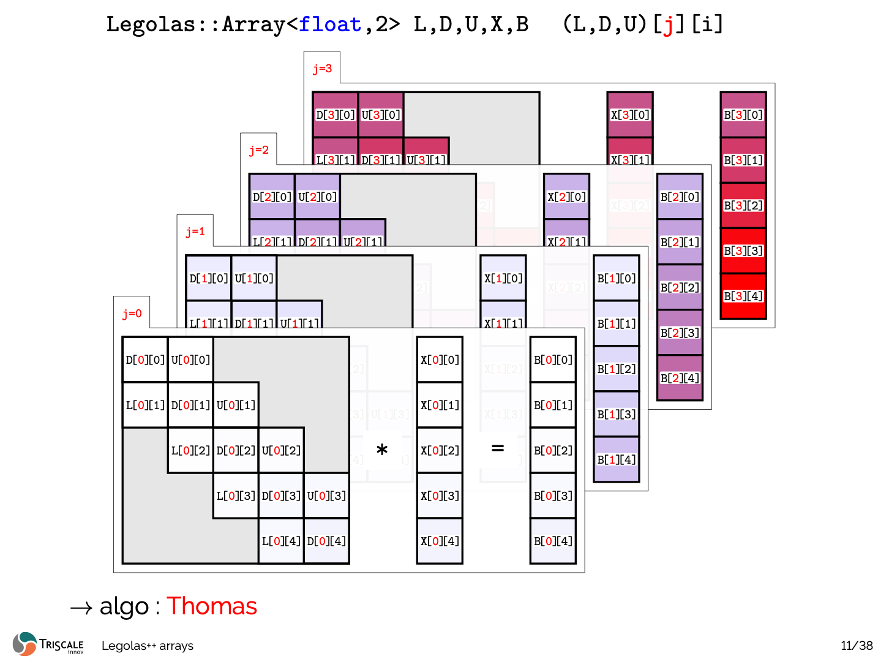
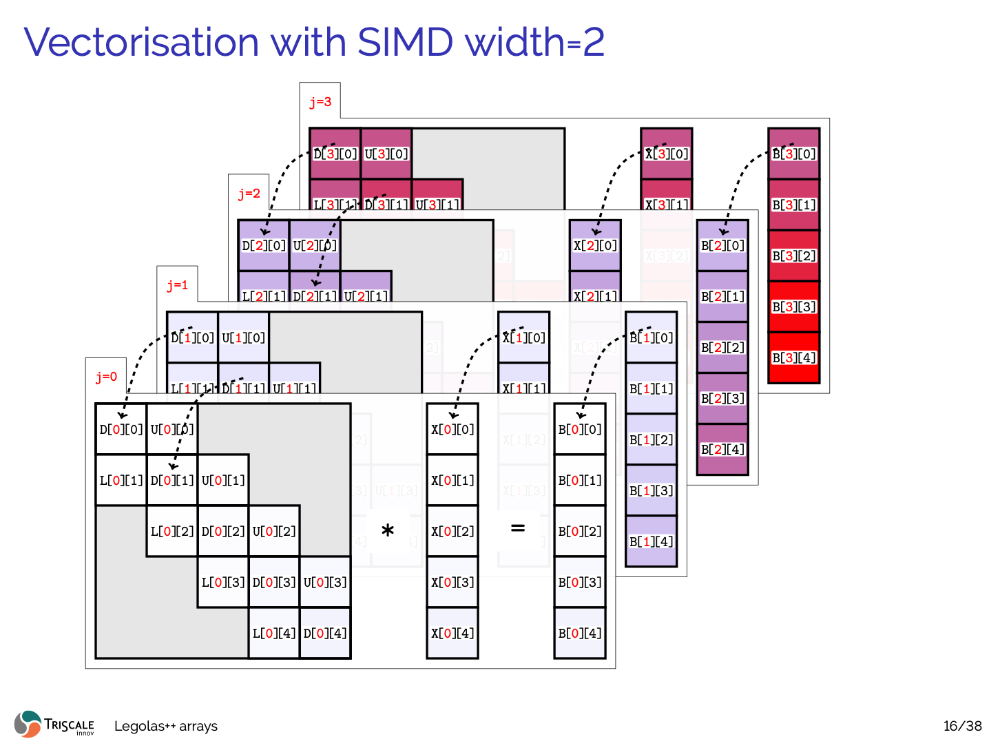
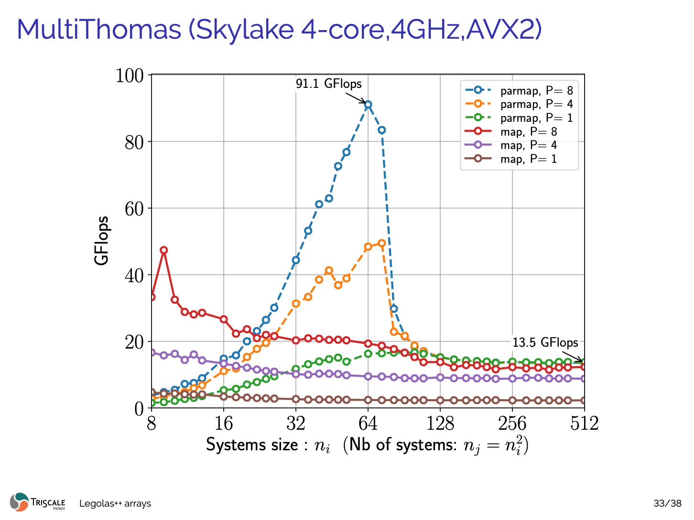

Data Layout Interleaving (DLI)
The central innovation of Legolas++ is Data Layout Interleaving (DLI).
Rather than attempting to parallelize along the sequential recurrence dimension \(i\), Legolas++ packs corresponding elements from \(P\) independent problem instances directly into contiguous physical memory.
Memory Layout Comparison
The Fundamental Motivation: Independent Ensembles
In high-performance numerical computing, we rarely solve a single isolated recurrence in isolation. Instead, we typically solve an ensemble of \(M\) independent problem instances of size \(N\):

Figure 1: Ensemble of \(M\) independent linear systems \(T_j X_j = B_j\) (each of size \(N\)) represented as 2D slices \(j = 0, 1, 2, 3\dots\) with tridiagonal bands \((L, D, U)[j][i]\).The Cross-System Vectorization Dilemma
Consider trying to vectorize across these independent systems using a SIMD vector width of \(P = 2, 4,\) or \(8\):

Figure 2: Without interleaving, elements at identical step \(i\) across systems (e.g. \(D[0][0]\) and \(D[1][0]\)) reside on distinct memory slices separated by stride \(N\). Loading them into a SIMD vector requires costly non-contiguous gather operations.In standard C++ (e.g. std::vector<std::vector<float>>, nested arrays, or standard row-major flat buffers float[M][N]):
- System \(j=0\): [ X[0][0], X[0][1], X[0][2], ... X[0][N-1] ]
- System \(j=1\): [ X[1][0], X[1][1], X[1][2], ... X[1][N-1] ]
- System \(j=2\): [ X[2][0], X[2][1], X[2][2], ... X[2][N-1] ]
- System \(j=3\): [ X[3][0], X[3][1], X[3][2], ... X[3][N-1] ]
To pack elements \(X[0][i], X[1][i], X[2][i], X[3][i]\) into a 128-bit or 256-bit SIMD register, the CPU cannot issue a linear vector load. It must either perform scalar gathers or explicit register transposes, bottlenecking the memory subsystem and destroying throughput.
The Legolas++ Solution: Data Layout Interleaving (DLI)
Legolas++ eliminates this overhead by interleaving data across systems directly at allocation time:

Figure 3: Animated DLI Mechanism. Elements at identical step \(i\) across \(P=4\) independent systems are interleaved contiguously in physical memory, allowing a single aligned 128-bit / 256-bit SIMD vector instruction (ldr q / vmovaps) to load all 4 elements in a single clock cycle.
With a packing factor of \(P = 4\) along dimension \(D = 2\):
Physical Memory Stream:
Packet 0 (i = 0): [ X[0][0], X[1][0], X[2][0], X[3][0] ] <-- 1 Single Aligned SIMD Load
Packet 1 (i = 1): [ X[0][1], X[1][1], X[2][1], X[3][1] ] <-- 1 Single Aligned SIMD Load
Packet 2 (i = 2): [ X[0][2], X[1][2], X[2][2], X[3][2] ] <-- 1 Single Aligned SIMD Load
...
Packet N-1 (i = N-1): [ X[0][N-1], X[1][N-1], X[2][N-1], X[3][N-1] ]
When stepping sequentially through \(i = 0, 1, \dots, N-1\) along the recurrence:
- 100% Contiguous Linear Streaming: Hardware L1/L2 prefetchers operate at peak theoretical bandwidth.
- Zero Gather / Scatter: Every vector load/store is a single unmasked 128-bit, 256-bit, or 512-bit instruction (ldr q on ARM NEON, vmovaps on x86 AVX2/AVX-512).
- Zero Transpose Overhead: No instructions are wasted on register shuffles or unpacking.
Zero-Overhead Abstraction: .getPackedView()
How does Legolas++ present this interleaved layout to user code without making the algorithm messy?
When an array Legolas::Array<float, 2, P, 2> is passed to an algorithm via Legolas::map or Legolas::parmap:
1. Legolas++ calls .getPackedView() on the tensor.
2. The packed view has rank 2, but its effective outer dimension is \(M / P\), and its element scalar type is reinterpreted directly as a SIMD vector pack Legolas::NativeSimd<float, P> (using GCC/Clang vector extensions __attribute__((vector_size(P * sizeof(float)))) or MSVC emulation).
3. In user code, the exact same mathematical solver runs unchanged:
+, -, *, /, FMA) applied to val are emitted by the compiler directly as native hardware vector instructions (ARM NEON fadd.4s, fmla.4s or x86 AVX2 vaddps, vfmadd213ps).
Historical Benchmark Validation: Skylake AVX2
The performance impact of this transformation was originally demonstrated on an Intel Core i7-6700K (Skylake 4.0 GHz, AVX2):

Figure 4: Historical benchmark on Intel Skylake (4 cores, 4.0 GHz, AVX2). Transitioning from scalar (\(P=1\)) to AVX2 (\(P=8\)) combined with multi-core parallel mapping (parmap) elevates tridiagonal recurrence throughput from 2.4 GFlops to 91.1 GFlops.
Why DLI is Superior to Transpose-on-the-Fly
Some libraries store arrays in standard layout and transpose blocks into registers using shuffle instructions before computing.
| Feature | Transpose-on-the-fly | Legolas++ DLI |
|---|---|---|
| Allocation | Standard row-major | Interleaved directly at creation |
| Compute Overhead | Instructions wasted on register shuffles / unpacks | 0 instructions wasted |
| Bandwidth | Saturated by gather/scatter or extra transpose passes | 100% linear streaming |
| Memory Reuse | Temporary registers consumed by transposes | Maximum register budget available for FMA accumulation |